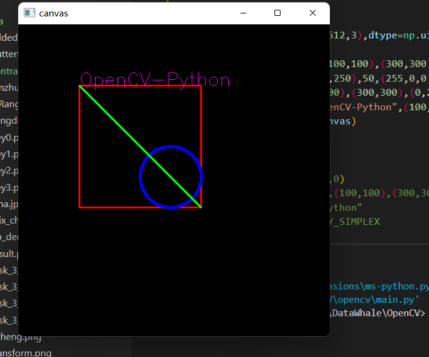

- cv.mean(src[, mask] ) ->retval
- cv.meanStdDev(src[, mean[, stddev[, mask]]]) ->mean, stddev
- cv.minMaxLoc(src[, mask]) ->minVal, maxVal, minLoc, maxLoc
- src表示输入图像,mask表示计算区域
- mean, stddev, minVal, maxVal分别表示均值，标准方差，最小与最大
- 相关函数cv.line()、cv.circle()、cv.rectangle()、cv.ellipse() 椭圆cv.putText()
- 相关参数解释：
- img表示输入图像
- color表示颜色，如(255, 0,0)表示蓝色
- thickness表示线宽, 大于0表示绘制，小于0表示填充
- lineType表示渲染模式, 默认LINE_8, LINE_AA表示反锯齿
- cv.rectangle(canvas,(100,100),(300,300),(0,0,255),2,8) 矩形图像绘制
- canvas代表图像
- (100,100)与(300,300)代表左上右下坐标
- (0,0,255)代表颜色
- 2代表线条宽度(负数代表填充)
- 8是线性,默认取8
- cv.circle(canvas,(250,250),50,(255,0,0),4,cv.LINE_8) 圆形图像绘制
- canvas代表图像
- (250,250)代表圆心坐标
- 50代表半径
- (255,0,0)代表颜色
- 4代表线条宽度(负数代表填充)
- cv.LINE_8是线条的类型。可以取8，4，CV_AA三个值,分别代表8邻接连接线，4邻接连接线和反锯齿连接线。默认值为8邻接
- putText 默认只支持英文
- org表示文字起始坐标点
- fontFace表示字体类型
- fontScale表示字体大小
函数计算文本区域大小函数
- (fw,uph),dh=cv.getTextSize(text,fontFace,font_scale,thickness)
text, # 表示文本信息
fontFace, # 表示字体类型
fontScale, # 表示字体大小
thickness # 表示线宽
返回文本信息区域大小，与字体的基线baseline位置

Numpy中的随机函数
- random.randint(low, high=None, size=None, dtype=int)
- Low表低值，high表示高值，size表示维度，dtype表示类型
- np.random.randint(0, 256)表示产生0~255随机数，类型是int
cv.randn(dst, mean, stddev)
- 生成目标图像dst
- 噪声均值mean
- 噪声方差stddev
- cv.randn(canvas, (40, 200, 140), (10, 50, 10))